Bluesky
Bluesky Hackathon Tokyo Vol.1
2026.04.18

はじめに
このイベントはBluesky公式イベントです。
2023年に世界初のBluesky meetupを四谷ラボというコミュニティでボランティアでお手伝いしたことからの縁で運営の協力をおこなっています。
四谷ラボってなんやねん
私が創設したコミュニティです。
会社組織に縛られずにオープンに知識を蓄積したり、
わいわいと楽しくやっていきながら
いずれ地球を飛び出そう！
というぶっ飛んだ目標があります。
詳しくはkojiraかShino3まで
プチアイディアソン
各自に配ったアイデアシートに最低1枚書いてもらいます。書ける人は何枚でも

右上のこのへんに自分の名前を書いておいてください
1分で説明することをイメージしながら書くとよいでしょう。
絵を描いても構いません
プチアイディアソン開始！
タイトル、ユーザー、シチュエーション、うれしさを全て埋めてみましょう
右上のこのへんに自分の名前を書いておいてください
1分で説明することをイメージしながら書くとよいでしょう。
絵を描いても構いません